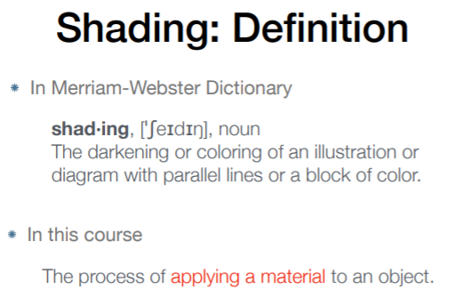

L07~09 Shading
1 Shading: Definition 着色定义
引入明暗与不同颜色的过程称为着色。在本课中定义是给物体应用材质的过程。
2 Blinn-Phong Reflectance Model
一种简单的着色模型，包含漫反射、镜面反射和环境光三个部分。
3 Shading Frequencies 着色频率

3.1 平面着色 (Flat Shading)

3.2 顶点着色 (Gouraud Shading)
每个顶点做一次Shading，对颜色值插值。

3.3 像素着色 (Phong Shading)
这里的Phong Shading指的是一种着色频率，之前说的Blinn-Phong是一种着色模型。三角形三个顶点求出法线，在三角形内部的像素，对法线值做插值，对每个像素做Shading。

3.4 对比
几何形体足够复杂的情况下，用简单的Shading方法也可以达到好的效果。

3.5 顶点法线求法
一个顶点肯定被多个三角形共用，就用相邻的三角形面法线相加再求平均，通过判断面积比例加权平均的话效果会更好。

内部平滑过渡的法线做法——Barycentric interpolation 重心插值，法线记得归一化。

4 Graphics Pipeline 实时渲染管线


5 Texture Mapping 纹理映射
纹理本身设计可以无缝衔接：tilable，一种设计无缝衔接纹理的方法：Wang Tiling。
我们知道三角形顶点对应的UV，那么三角形内部的UV怎么确定呢？这就需要插值方法了。
6 Barycentric Coordinates 重心坐标插值


💡 三维空间中的变换要在三维空间做插值然后再投影到二维去，不能先投影再插值。

7 Applying Textures 纹理应用
点上计算得到插值出来的UV坐标，然后在纹理上查询，之后根据需要应用。

8 Texture Magnification 纹理过小
纹理分辨率太小，多个pixel（像素）映射到了同一个texel（纹理像素）。解决方法→插值。

8.1 Bilinear Interpolation 双线性插值
双线性插值：水平插值+竖直插值。lerp为linear Interpolation的缩写。


8.2 Bicubic Interpolation 双三次插值
取周围16个点也是做竖直和水平的插值，每次用4个，做三次的插值，不是用线性的差值。双向三次插值运算量大，但是效果好。
9 纹理过大的问题
纹理过大时，一个pixel对应了多个texel → 采样频率不足导致 摩尔纹+锯齿（走样）。


9.1 Mipmap 多级渐远纹理
Mipmap可以进行快速的范围查询，但是是近似的，并且只有方形。

9.2 Anisotropic Filtering 各向异性过滤
Mipmap会把远处的细节都模糊掉，因为它只能查询方块的区域内。解决三线性插值的方法就是各向异性过滤。


10 Application of Texture 各种纹理贴图
10.1 Environment Map 环境光贴图
把来自各个方向的光照记录下来，假设环境光来自无限远，只记录方向。
10.2 Bump Mapping 凹凸贴图
Bump Mapping的Texture记录了高度移动，不改变几何信息。贴图作出人为的假的法线，由此得到假的着色效果，产生凹凸效果。
10.3 Displacement mapping 位移贴图
与凹凸贴图的输入相同，但是位移贴图真正改变几何信息，对顶点做位移；相比上更逼真，因为凹凸贴图在边界上会露馅。

10.4 Procedural textures 程序纹理
三维的纹理，定义了空间中任意一点的值。对于这种纹理，并没有真正生成这个纹理的图，它们定义了三维空间的噪声函数。

10.5 Precomputed Shading 预计算着色
用空间换时间，先计算好环境光遮蔽贴图，然后再把纹理贴上。

10.6 Solid modeling & Volume rendering
三维纹理广泛应用到体渲染之中，比如核磁共振等扫描后，得到体积的信息，通过这些信息进行渲染，得到结果。